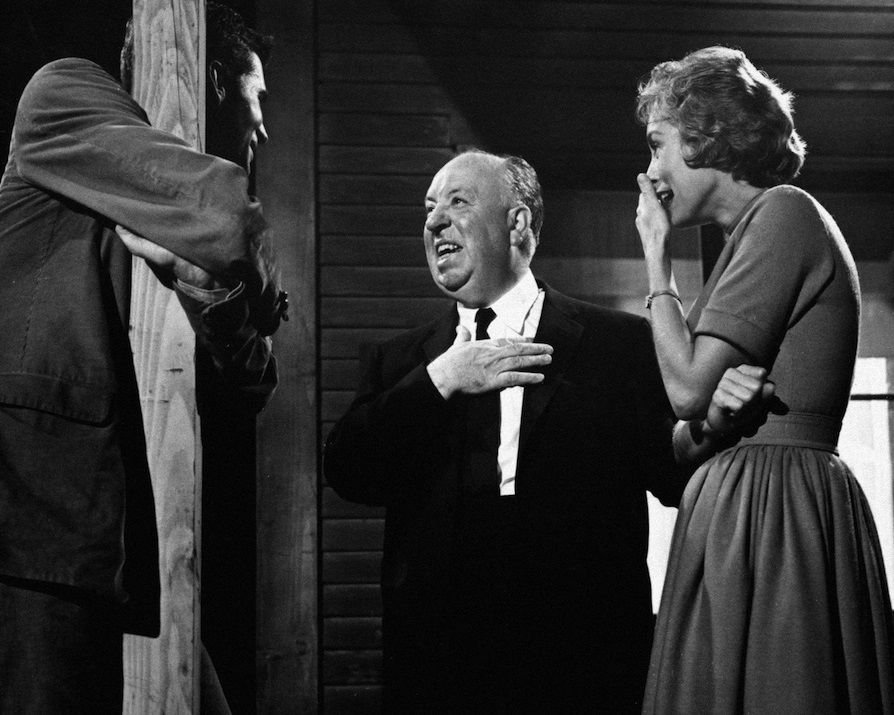

Psycho, Anthony Perkins, Alfred Hitchcock and Janet Leigh on the Set
Alfred Hitchcock · 1960 · Production photograph, black and white
In copyright. Look and learn: shown for study, not for download.
Hitchcock produced and paid for the film himself and shot it in black and white at Revue Studios, home of his television show, on a budget of $807,000, from 11 November 1959 to 1 February 1960. Most of the crew came from Alfred Hitchcock Presents. Janet Leigh was cast for $25,000, a quarter of her usual fee, and Anthony Perkins for $40,000. During filming Hitchcock hid versions of the Mother corpse prop in Leigh's dressing-room closet.